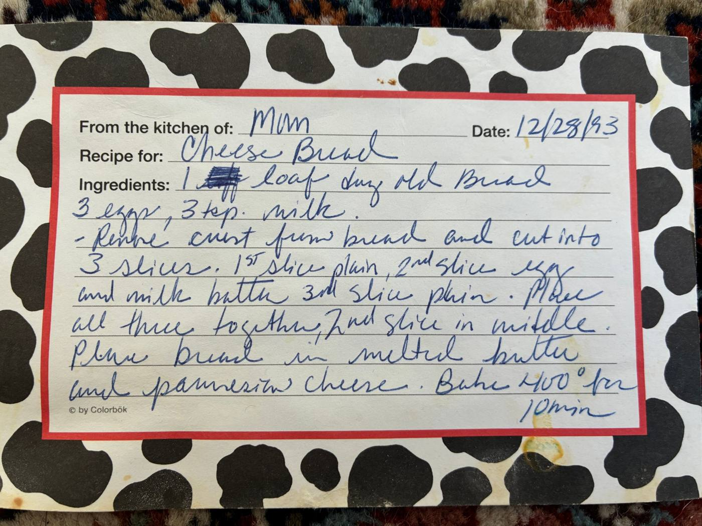

Breads & Sides
Cheese Bread
From the kitchen of Mom
Oven400°F
Bake10 min

Mom's original card · tap to enlarge
Ingredients
Method tap a step to mark it done
- Remove the crusts from the bread.
- Beat the eggs and milk into a batter.
- Work in stacks of 3 slices: leave the 1st slice plain, dip the 2nd slice in the egg-and-milk batter, leave the 3rd slice plain.
- Stack all three together, with the battered slice in the middle.
- Coat the bread in melted butter and Parmesan cheese.
- Bake at 400°F for 10 minutes.